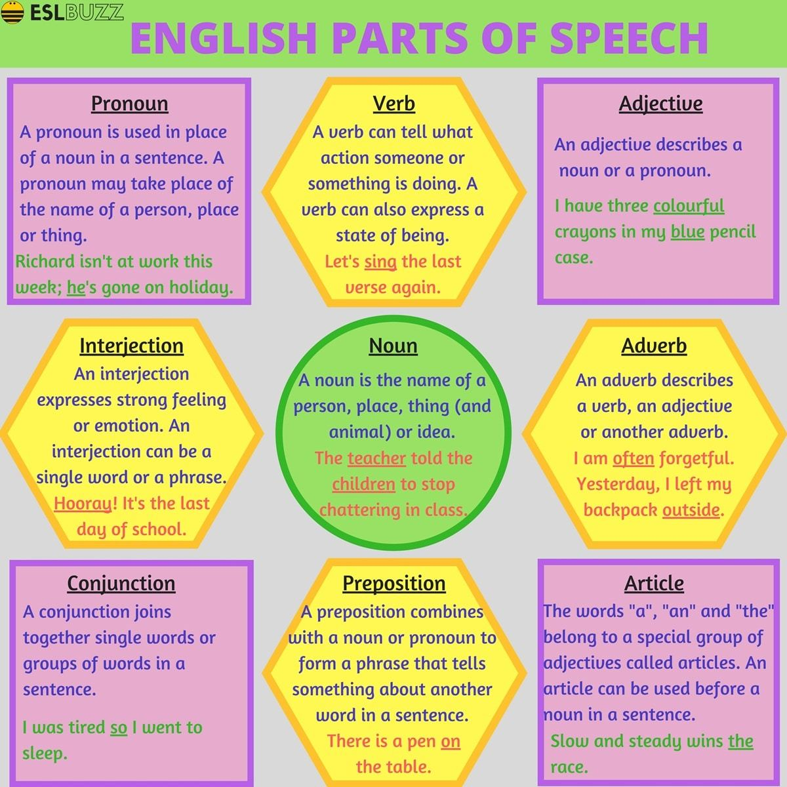

Parts of Speech
originally posted on ESLBuzz.com

There are nine main parts of speech (also know as word classes): noun, pronoun, adjective, article, verb, adverb, preposition, conjunction and interjection.
Noun
A noun is the name of a person, place, thing (and animal) or idea.
For example: dog, cat, elephant, garden, school, work, music, town, teacher, farmer, Bob, Sean...
Pronoun
A pronoun is used in place of a noun in a sentence. A pronoun may take place of the name of a person, place or thing.
For example: he, I, its, me, my, she, that, this, those, us, who, whom, you...
Verb
A verb can tell what action someone or something is doing. A verb can also express a state of being.
For example: run, sit, stand, go, have, get, promise, invite, laughed, listen, sing, playing, singing, walk...
Adjective
An adjective describes a noun or a pronoun.
For example: angry, brave, careful, healthy, little, old, generous, red, smart, two, small, tall, some, good, big, useful, interesting...
Adverb
An adverb describes a verb, an adjective or another adverb.
For example: badly, fully, carefully, hardly, hungrily, never, quickly, silently, quickly, well, very, really, almost...
Article
The words "a", "an" and "the" belong to a special group of adjectives called articles. An article can be used before a noun in a sentence.
For example: the dog, the cat, a rabbit, an apple, an ant...
Preposition
A preposition combines with a noun or pronoun to form a phrase that tells something about another word in a sentence.
For example: above, except, from, in, near, of, before, since, between, upon, with, to, at, after, on, toward...
Conjunction
A conjunction joins together single words or groups of words in a sentence.
For example: and, or, so, after, since, before, either, neither, because, unless, but...
Interjection
An interjection expresses strong feeling or emotion. An interjection can be a single word or a phrase.
For example: ahem!, aha!, gosh!, aw!, great!, hey!, hi!, hooray!, oh!, yeah!, oops!, phew!, eh!, oh!, ouch!, hi!, well!...
- noun: name of a person, place, thing (and animal) or idea
- pronoun: used in place of a noun in a sentence
- verb: tell what action someone or something is doing
- adjective: describes a noun or a pronoun
- adverb: describes a verb, an adjective or another adverb
- article: The words "a", "an" and "the"
- preposition: combines with a noun or pronoun to form a phrase that tells something about another word in a sentence
- conjunction: joins together single words or groups of words in a sentence
- interjection: expresses strong feeling or emotion
- noun: нэр томъёо
- pronoun: Үг
- verb: үйл үг
- adjective:
- adverb: Админ
- article: нийтлэл
- preposition: Оршил
- conjunction: Хамтарсан
- interjection: завсарлага
Source: Translate.Google.com
- noun: имя существительное
- pronoun: местоимение
- verb: глагол
- adjective: имя прилагательное
- adverb: наречие
- article: статья
- preposition: предлог
- conjunction: конъюнкция
- interjection: междометие
Source: Translate.Google.com
- noun: зат есім
- pronoun: есімдік
- verb: етістік
- adjective: сын есім
- adverb: ақау
- article: мақала
- preposition: префикс
- conjunction: байланыстырады
- interjection: ауытқу
Source: Translate.Google.com
- noun: คำนาม
- pronoun: สรรพนาม
- verb: คำกริยา
- adjective: คำคุณศัพท์
- adverb: คำวิเศษณ์
- article: บทความ
- preposition: บุพบท
- conjunction: การเชื่อม
- interjection: คำอุทาน
Source: Translate.Google.com